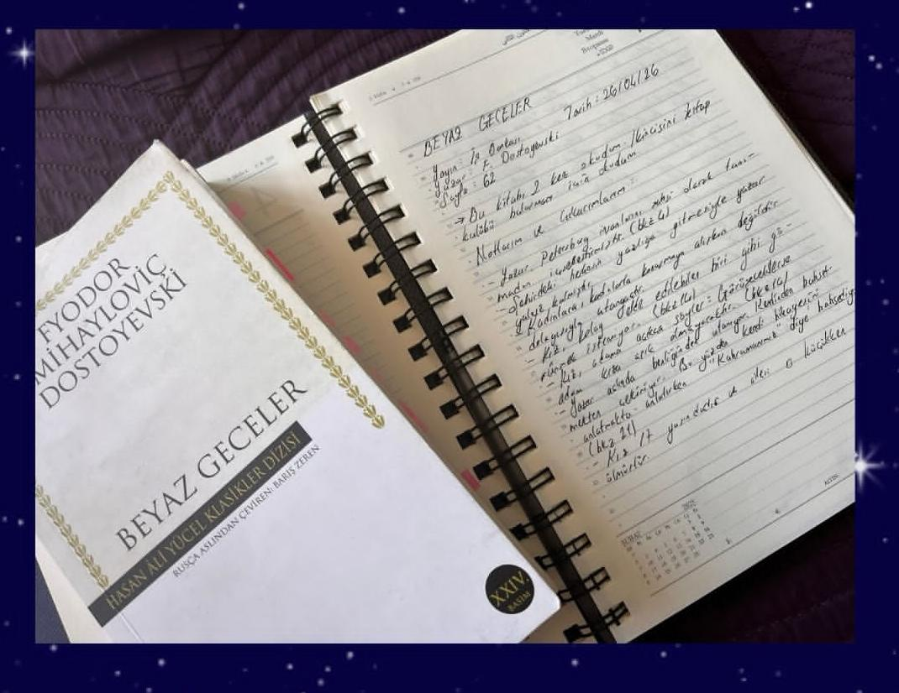
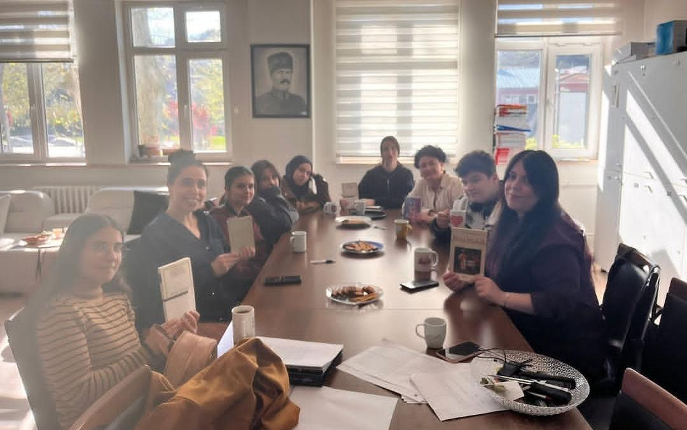

Fikirlerin
Sonsuz
Sarmalı.
Burası düz bir okuma kulübü değil; sayfaların arkasındaki felsefi kodları kıran, entelektüel derinliği arayan bağımsız bir komünite.
Entelektüel Matris
Kulübümüzün DNA'sını oluşturan altı temel sütun, modern bir mozaik yapıda birleşti.
Biz Kimiz?
Fevzi Çakmak Anadolu Lisesi bünyesinde, edebiyatı bir hobi değil bir yaşam felsefesi olarak gören vizyonerlerden oluşan Tunay Kulübü topluluğuyuz.
Modern Analiz
Klasik felsefi metinlerden modern distopyalara uzanan bir düzlemde popüler anlatıların altındaki gizli anlamları söküp alıyoruz.
Haftalık Oturum
Her hafta loş bir ışık ve kahve eşliğinde zihinsel sınırları zorluyoruz.
Söyleşiler
Yazarlar ve akademisyenlerle vizyon turları.
Kritik Atölyeleri
Sadece olay örgüsünü değil; yazarın psikolojisini ve dönemin sosyo-politik yapısını mikro düzeyde masaya yatırıyoruz.
Sosyal Köprüler
Kitap toplama kampanyaları ve çevre kütüphane restorasyonları ile bilginin ışığını lise duvarlarının dışına taşıyoruz.
Anların Estetiği
Sürükle, incele ve hisset. Buluşmalarımızdan estetik kareler.


Bu Kültürün
Bir Parçası Ol
Kendi entelektüel devrimini başlatmak ve vizyoner komünitemize adını yazdırmak için formu tetikle veya sosyal ağlardan ağımıza sız.